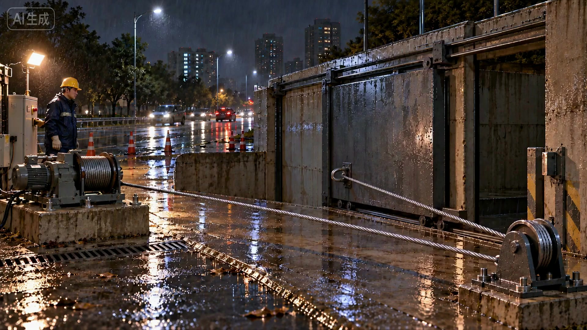
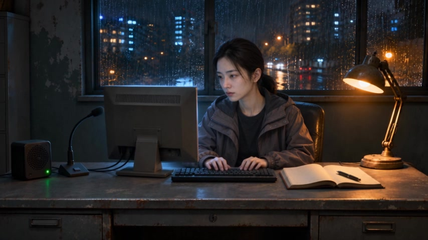
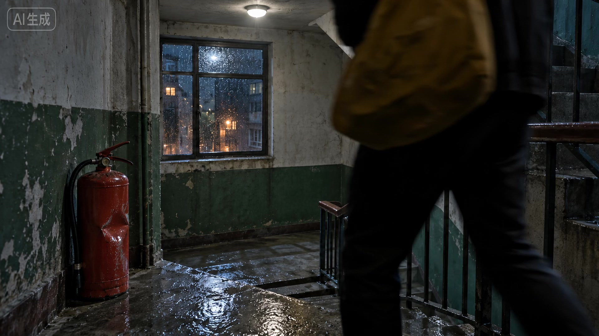
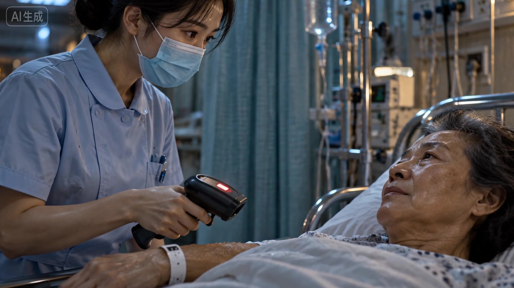
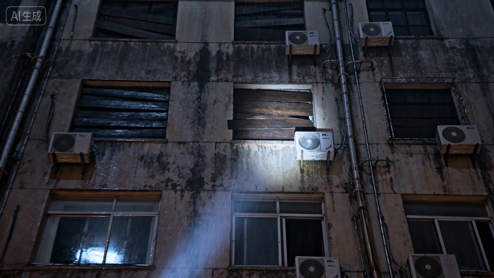
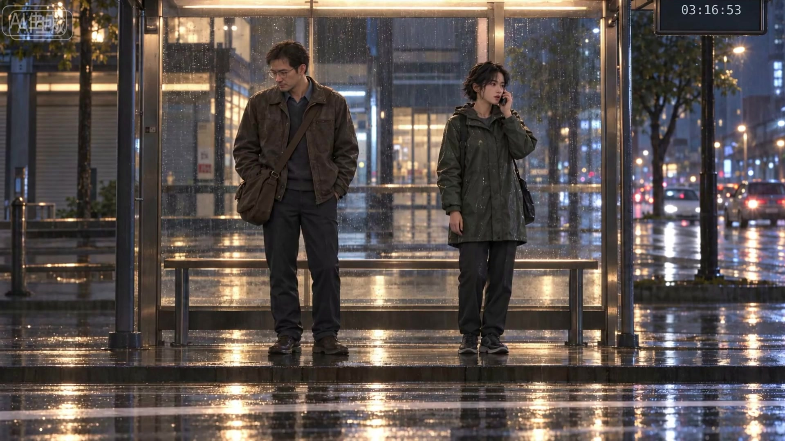
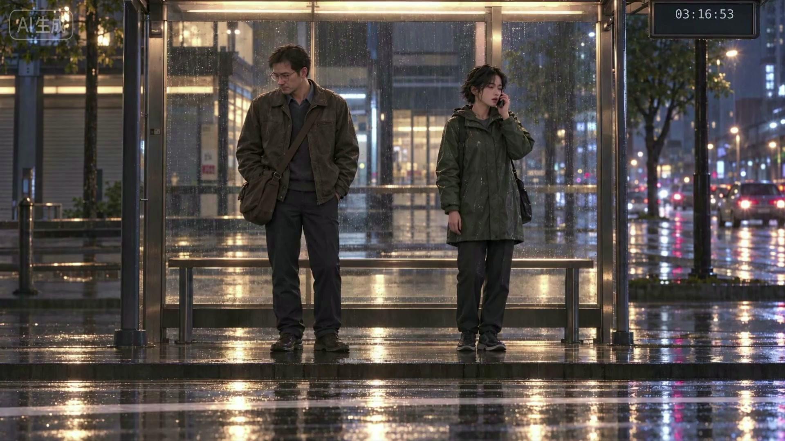

municipal · 市政异常

旧素材定位，非新生成 · 源 0s
进入 → 退出：市政作业 → 铁门撞限位、钢索仍受力
已有素材：已认可市政原片，保留完整画面和原声。
Awesome方法用于：七句母带第一句做 J-cut；以实际对讲结尾决定进入 D1 的接点，不改市政原片。
参考需求：原片为风格及事件事实来源；不新增图片或生成。
待修／复检：核对第一句报告确与绞盘异常对应；新增混音不盖住关键现场声。
生成边界：无需新生成；新增组装仍需整片审看。
打开旧原视频来源与身份
outputs/shizhen-episode01/macro-opening-video-20261027/MC01-02-edit-v4/失帧-市政异常-1080p-剪辑修订04.mp4SHA256：b3d5a404eaf19453081309754ad11b997725d81130973a991530a78ff663f05d
请求取帧秒：0；实际帧SHA：bc0d278672716cdbe43533e4057032ff5fb041efdc770d431f6cbeca8ca9a85a
D1 · 记录台接报

旧素材定位，非新生成 · 源 3.4s
进入 → 退出：静听报告 → 听完开始记录
已有素材：母带声音已认可；D1 可用画面范围 0–4.5 秒。
Awesome方法用于：只用许可源窗内的听完/敲键盘动作承接 J-cut，不能把键盘声提前混入市政。
参考需求：母带实际画面锚定董文慧身份和记录台，不能把候选图替代真实源状态。
待修／复检：逐帧核对采用出点，镜头内动作应成立；480p 原始画质不会因放大变成原生1080p。
生成边界：优先复用；若需要新画面，先展示该镜实际参考并取得新认可。
打开旧原视频来源与身份
runs/shizhen-opening-dispatch-20261104/M1-r11/state/video-generation/fetch/files/9a776d418aff76d3da97c9e37677780e5c39931b852028ed7def612b186d2fa0.mp4SHA256：9a776d418aff76d3da97c9e37677780e5c39931b852028ed7def612b186d2fa0
请求取帧秒：3.4；实际帧SHA：8fb63af7fedb681d56d4f3d5377663f1b2509498cffe33f3f0ef4e326cdc2e5f
D2 · 楼梯回层

旧素材定位，非新生成 · 源 3.5s
进入 → 退出：同一住户向下离画 → 从上方同一楼梯返回同一灭火器前
已有素材：旧 D2r1 候选，未据此取得新用户认可。
Awesome方法用于：把进入/退出方向写成可核对的空间关系。旧 r1 “右前景返回”与原设计“上方返回”存在差异，先核对而非直接宣布循环成立。
参考需求：以凹陷红灭火器、黄色帆布包与楼梯路径为锚点；若重做，提供干净起点和路径审看图，图区分身份/空间职责。
待修／复检：必须看懂是同一人回到原层，不是正常下楼或另一个入口出现；旧PASS仅历史判断。
生成边界：只在旧片无法满足时局部新生成；新参考、路线与镜头方案须先认可。
打开旧原视频来源与身份
runs/shizhen-opening-dispatch-20261030/D2r1/state/video-generation/fetch/files/5946ddfe72ebac4e5dbf088f34022d24f574d36870db6fa60bcd7ab78ce6af1a.mp4SHA256：5946ddfe72ebac4e5dbf088f34022d24f574d36870db6fa60bcd7ab78ce6af1a
请求取帧秒：3.5；实际帧SHA：601357b50bfefdf2a767df08e2a8cab7b2c6b6b83e6a757177cf57d0f354c3ab
D3 · 急诊登记异常

旧素材定位，非新生成 · 源 4s
进入 → 退出：护士举扫码器 → 红灯两次 → 抬眼看仍睁眼呼吸的病人
已有素材：旧 D3 候选；历史记载护士未明确抬眼、开头有特写切点。
Awesome方法用于：分开核对扫描反馈与人物反应两条证据；不能让画外报告替代护士抬眼，也不因红灯出现就判整镜通过。
参考需求：需要手环/扫码器接触关系、红灯可见性、护士与病人的视线；原场景候选仅供定位，若补图须保留身份与方位。
待修／复检：确认两次红灯与病人活着同镜可读；确认抬眼反应及开头切镜是否服务表达。
生成边界：先检查可用源窗；不足时仅重做此镜，新参考须先认可。
打开旧原视频来源与身份
runs/shizhen-opening-dispatch-20261030/D3/state/video-generation/fetch/files/b312bba5ba817919f045fc4266469a77e93eb5b901d967332256210f76ccf85f.mp4SHA256：b312bba5ba817919f045fc4266469a77e93eb5b901d967332256210f76ccf85f
请求取帧秒：4；实际帧SHA：553d563f5c2cf783dbb087d672fef86126d724d2cb115b50f7d7ae3fcc54440f
D4 · 封死的七楼

旧素材定位，非新生成 · 源 5s
进入 → 退出：手电沿外墙逐层上移 → 停封死七楼窗 → 木板后轻声呼救
已有素材：旧 D4r1 候选；两次视频均没有需要的“救命”。
Awesome方法用于：将视觉定位与缺失声音分别处理：画面若成立则保留，只补木板后轻声呼救并检验位置/时机，不为缺声音重抽整镜。
参考需求：旧楼外墙层数、封窗位置和手电轨迹；新增声音要对应窗后空间，沿已有音频制作入口。
待修／复检：逐层上摇是否可数到七楼；不能仅推近。呼救在报告后可听，不能被对讲淹没。
生成边界：若只补声无需新视频；视觉不成立才另提局部参考与生成，先认可。
打开旧原视频来源与身份
runs/shizhen-opening-dispatch-20261030/D4r1/state/video-generation/fetch/files/f9eb9fefe358566f1c97881bdfad84a3f730534198b0b9c0f7b2c1f1900acb67.mp4SHA256：f9eb9fefe358566f1c97881bdfad84a3f730534198b0b9c0f7b2c1f1900acb67
请求取帧秒：5；实际帧SHA：9fc93bd61e34da54501a20293ab9ea8ae66deb4ce3f564f2c23ba40be4acfb13
D5 · 记录台计数
旧素材定位，非新生成 · 源 21.5s
进入 → 退出：写下一行 → 笔停；平淡低声“记上，第十四起”
已有素材：认可声音；画面许可约20.6–23.8秒，须再查麦克风缺失可见性。
Awesome方法用于：按明确源窗核验完整写字/停笔与空间。旧粗剪19.8–23.9秒不是扩大许可的依据；不机械沿用。
参考需求：复用母带人物、记录本和真实姿态；如空间缺失暴露，先报告是否需独立补画面。
待修／复检：不裁掉笔停或必要面部来遮缺陷；不新增惊恐表演，仍是日常调度语气。
生成边界：优先复用许可区间；必要新画面须新参考认可，不重抽已认可声音。
打开旧原视频来源与身份
runs/shizhen-opening-dispatch-20261104/M1-r11/state/video-generation/fetch/files/9a776d418aff76d3da97c9e37677780e5c39931b852028ed7def612b186d2fa0.mp4SHA256：9a776d418aff76d3da97c9e37677780e5c39931b852028ed7def612b186d2fa0
请求取帧秒：21.5；实际帧SHA：4bb9cf37e99e4ff54dbc6ffb1c6c65e0152042a7d238997ed4a0e846688875a3
D6 · 站台暂无报告

旧素材定位，非新生成 · 源 2s
进入 → 退出：两人等车、雨持续 → 实际B6首帧的姿态与运动可续接
已有素材：旧 D6 候选；色调略冷，接点未验，时钟已03:16:53。
Awesome方法用于：把末态交接落到实际B6源帧与正常速度接点；时钟是后期任务，不依赖视频模型精确写字走秒。
参考需求：B6实际无文字源帧锚定身份、空间和构图；检查手机、身体、雨势运动相位，而非只比画面相似。
待修／复检：“暂无报告”在B6首句前收住；核对03:16:50→53时钟计划与烧字事实、可实施性，禁止叠加造成重影。
生成边界：优先检查/局部后期；源动作无法接续时只处理D6，先认可新参考。
打开旧原视频来源与身份
runs/shizhen-opening-dispatch-20261030/D6/state/video-generation/fetch/files/30808fbb724021960159a3419be9b99dfc09dc898136f97c564bdcc8e607acaa.mp4SHA256：30808fbb724021960159a3419be9b99dfc09dc898136f97c564bdcc8e607acaa
请求取帧秒：2；实际帧SHA：b2e49288b6bc8207009988bb588d757ffacde7d423816c7bfc704af37b52fbf3
B6 · 站台既有段落

旧素材定位，非新生成 · 源 0s
进入 → 退出：已认可两人等车开场 → 原片事件与片名
已有素材：已认可 B6 原片，不重生成、不重剪。
Awesome方法用于：只处理D6→B6边界与新增前段声音关系；保留B6完整原声、动作和内部剪辑。
参考需求：B6是交接事实来源，不是可随意改造的风格素材。
待修／复检：新前段不能制造重复台词、动作复位、雨声跳变或色调突变。
生成边界：无新生成；完整前后组装交用户审看。
打开旧原视频来源与身份
outputs/shizhen-episode01/fusion-B-motion-20261027/variant-ASSEMBLY-B6/失帧-独立开场-ASSEMBLY-B6.mp4SHA256：d64aef43ddb97df8387adc03bd2a6ec71d6f1d5d901942a1d97082abc84a532a
请求取帧秒：0；实际帧SHA：801cf40790d1f7c9f650c9c177f794778119394f5cd639564facf95146292046